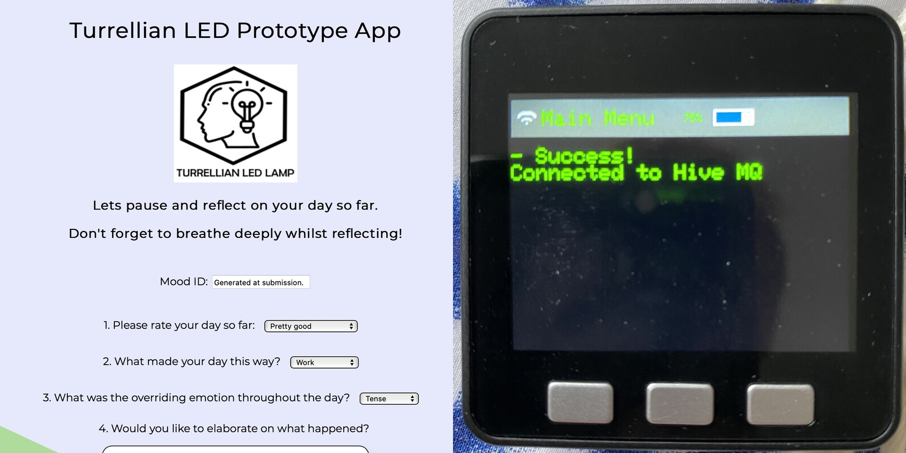
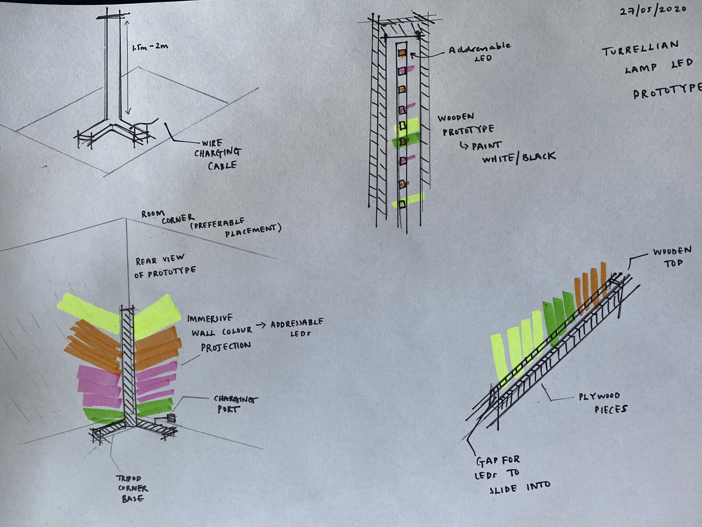
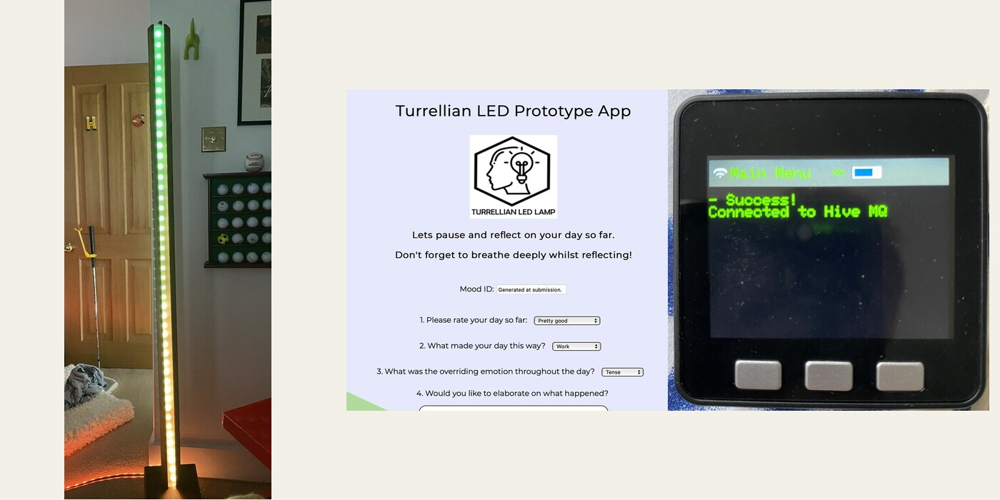
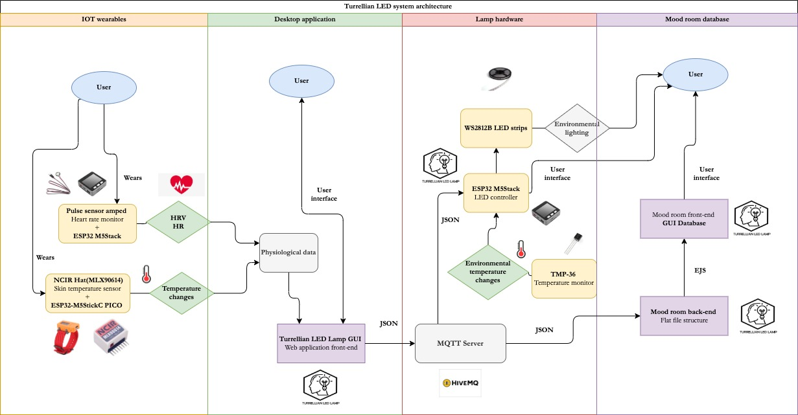
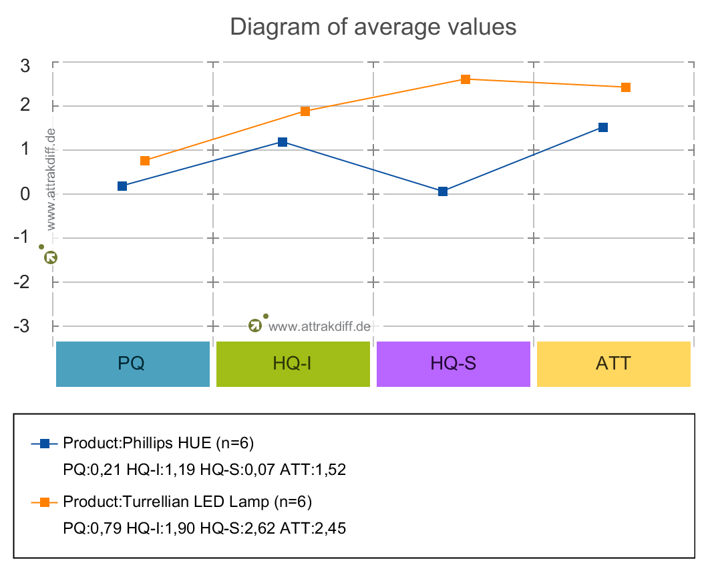

Turrellian LED Lamp

The Turrellian LED Lamp was my 2020 MSc Computer Science thesis at the University of Bristol, supervised by Dr Paul O'Dowd: a 6.5-foot affect-sensitive system designed to orient ambient light using both self-reported mood and physiological feedback. A reflective journal captured the person's current and desired state, while prototypes sensed heart rate, heart-rate variability (HRV) and skin temperature. Inspired by James Turrell's installations, the lamp translated the target state into an immersive colour sequence.
Designing the lamp
The tall timber column was designed for a corner, turning two walls into a light surface while taking up little floor space. Six activating or calming sequences mapped colour, saturation and movement to valence and arousal, drawing on the circumplex model of affect and colour-psychology research.


How the system worked
Turrellian combined two input streams. The browser journal recorded the person's current mood, context and intended emotional direction. A PulseSensor Amped connected to an M5Stack measured heart rate and HRV; an MLX90614 infrared sensor on an M5StickC measured skin temperature. Together, self-reporting and biosignals described the starting state and provided feedback on whether the light moved the person towards the desired valence–arousal region.
The journal and Mood Room interface were written in HTML, CSS and JavaScript. Browser and ESP32 devices published JSON through a HiveMQ MQTT broker. C++/Arduino firmware parsed the target state with ArduinoJson and PubSubClient, then used FastLED to drive one of six sequences across two WS2811 RGB strips. Processing/Java handled HRV visualisation, including Poincaré plots.
The working prototype was semi-automated: the person still selected the state they wanted to reach, while sensors supplied affective context and feedback. Continuous mood inference and machine learning were proposed as future work rather than presented as features of the system.

Pilot evaluation
Six participants used the lamp and a Philips Hue smart bulb in a pandemic-constrained workplace study. Five-minute pre/post readings tracked heart rate, HRV and skin temperature. Four participants reported improved mood, while the thesis interpreted five participants' physiological readings as movement towards the requested state. Turrellian scored higher across all four AttrakDiff measures, most clearly for stimulation.

Key findings
The pilot suggested that personalised ambient light could support a desired mood, but the sample was too small and the recordings too brief for a general claim. The stronger contribution was the end-to-end architecture: it showed how subjective feedback and bodily signals could be combined to orient environmental light, joining interaction design, biosensing, connected software, embedded programming and physical fabrication.